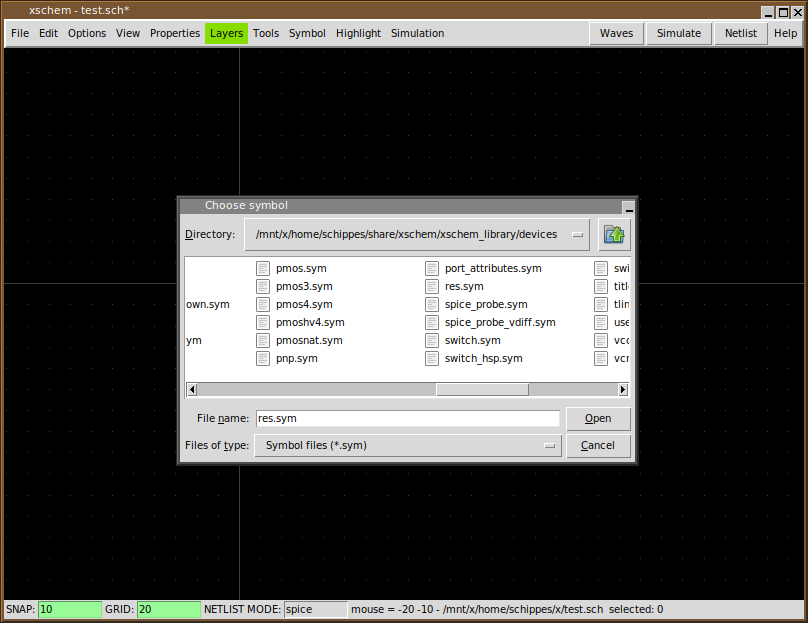
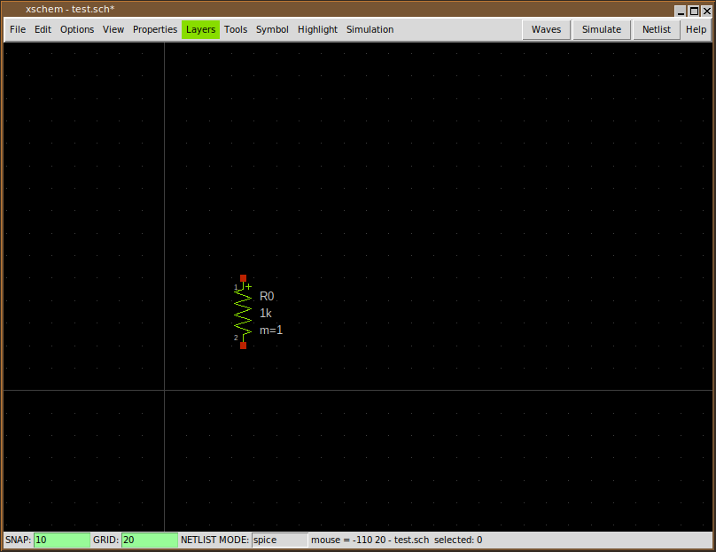
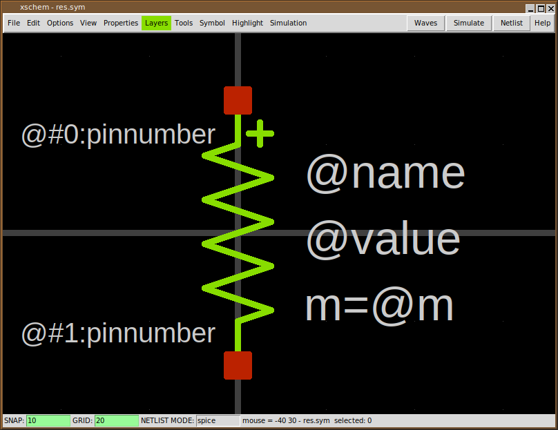

SYMBOLS
The best way to understand how a symbol is defined is to analyze an existing one. Load a test schematic (for example mylib/test.sch). Let's consider the resistor symbol. Use the Insert key to place the devices/res.sym symbol.
Use the file selector dialog to locate devices/res.sym under the XSCHEM_DESIGN_DIR base design path.
Now select the resistor by left-clicking on it (it will turn to grey color)
After selecting the component (component is an instance of a symbol) descend into its symbol definition by pressing the 'i' key. XSCHEM will load the devices/res.sym file and show it in the drawing window. Before descending it asks if you want to save the parent schematic drawing before loading the resistor symbol. Answer 'yes'.
The image above is the 'symbol definition', you can now select individual graphic elements that represent the symbol, lines, rectangles and text. Normally a symbol contains some pins, these are just rectangles drawn on the 'pin' layer, and some graphics / descriptive text. Another fundamental part of symbols are properties. Properties are text strings that define attributes of the symbol, for example:
- The name of the connection pins
- The type of the symbol (spice primitive, subcircuit, documentation)
- The format of the spice/verilog/VHDL netlist for the symbol
We will return on symbols after explaining properties.